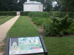
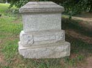
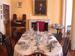

| page 4 of 6 |
| A Free Day in Washington DC 8/5/2001 |
UCLA at Gettysburg Journal |
| page 4 of 6 |
|  |
||
| The view from Robert E. Lee's front porch. Too bad it wasn't a nicer day! Washington Monument can be seen in the distance. Crowd of people at the foot of the hill are viewing the Kennedy graves. | The flower garden was designed by Mrs. Robert E. Lee. In 1884 it was destroyed to make space for a cemetery memorial. It is now being restored to its 1861 appearance. | The Kitchen Garden at Arlington house. |
|  |
 |
|
| Grave of Admiral David Dixon Porter, Grant's naval partner during the seige of Vicksburg. He is about 100 feet from Lee's front door. | The Family Parlor in the Custis-Lee mansion at Arlington. | The Dining Room in the Custis-Lee mansion. |
| Robert E. Lee and Mary Custis were married under the center arch between the Dining Room and the Family Parlor. | The White Parlor at Arlington house. | Painting of Robert E. Lee during the Mexican American War. |